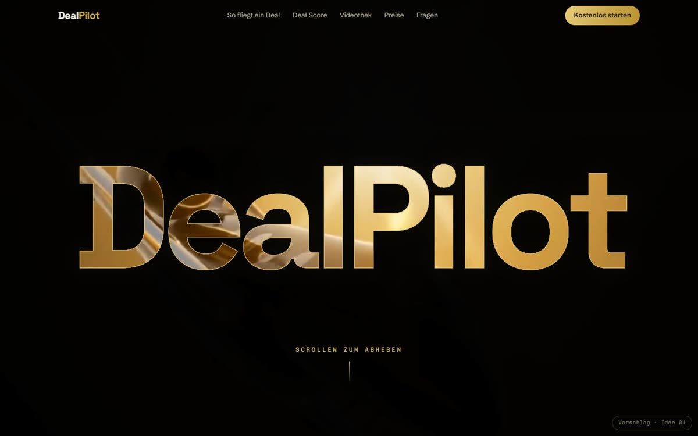
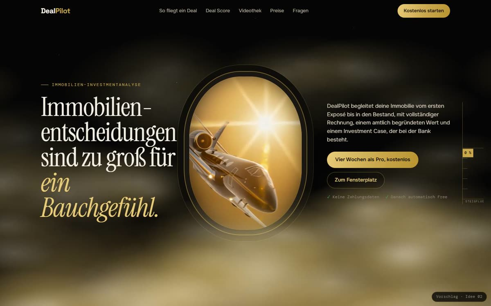
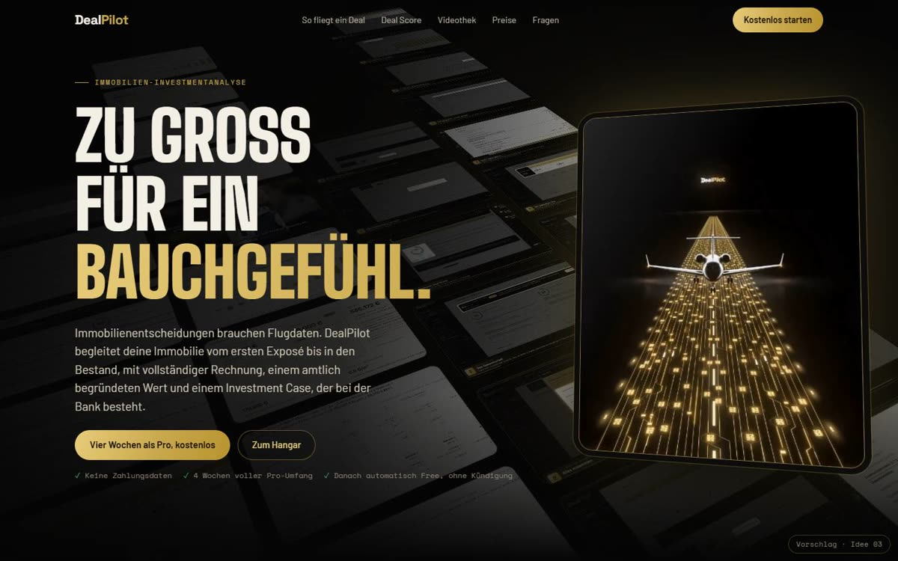
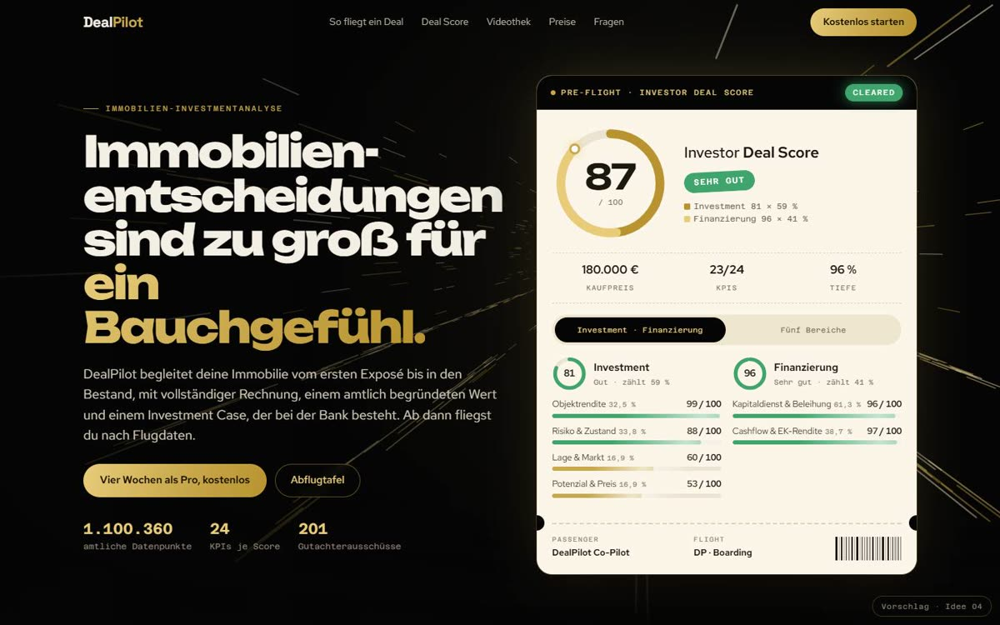
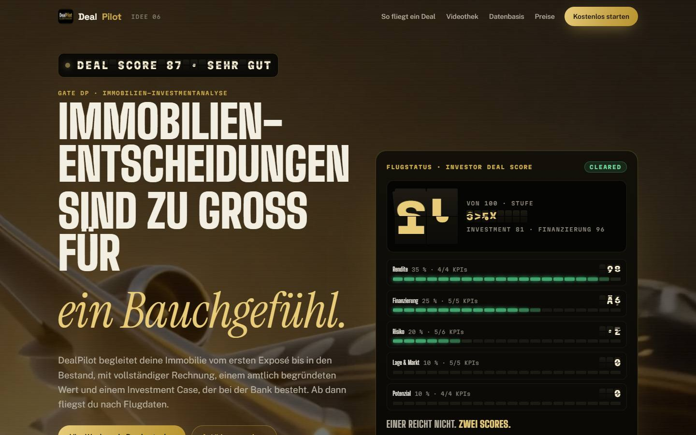
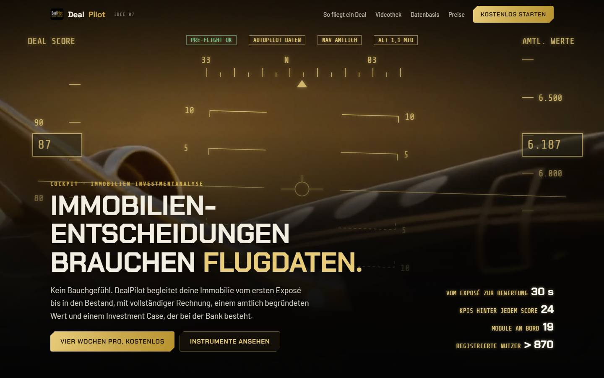
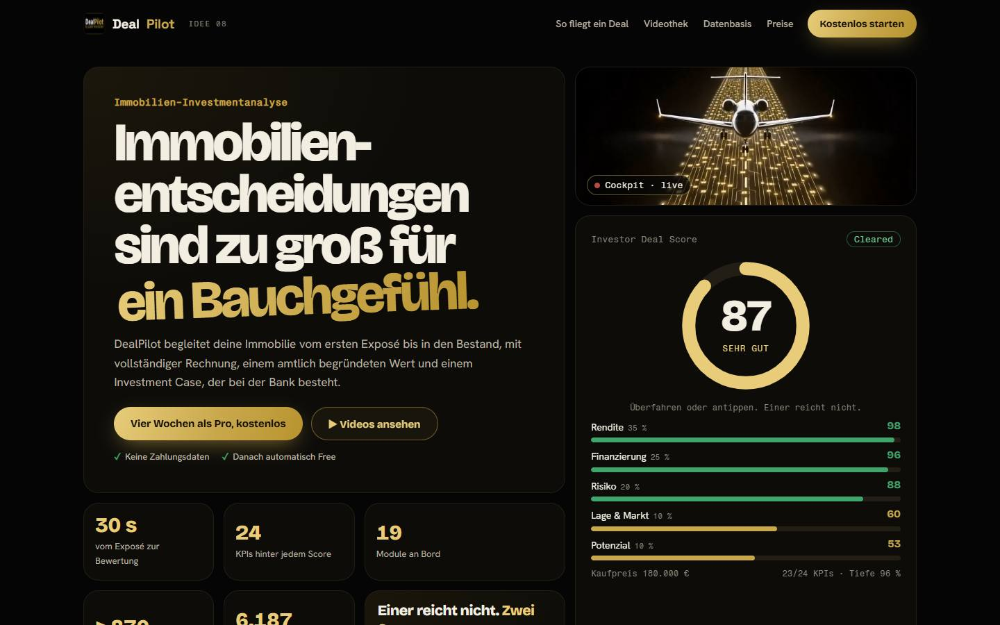
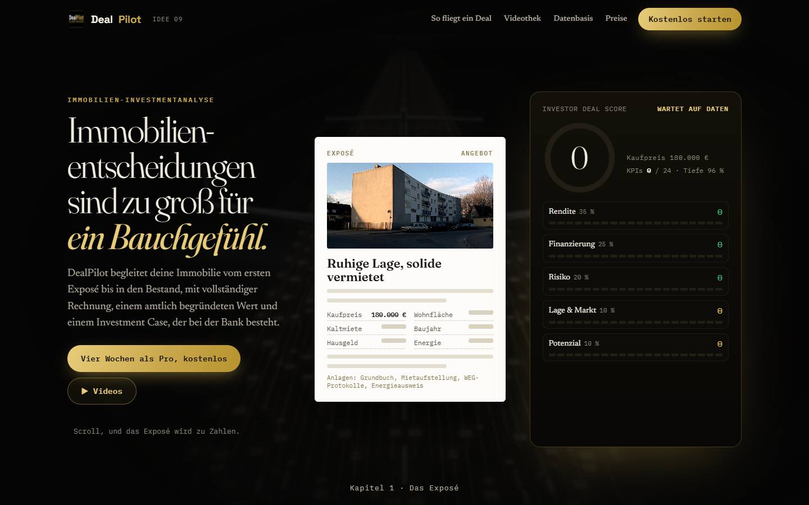
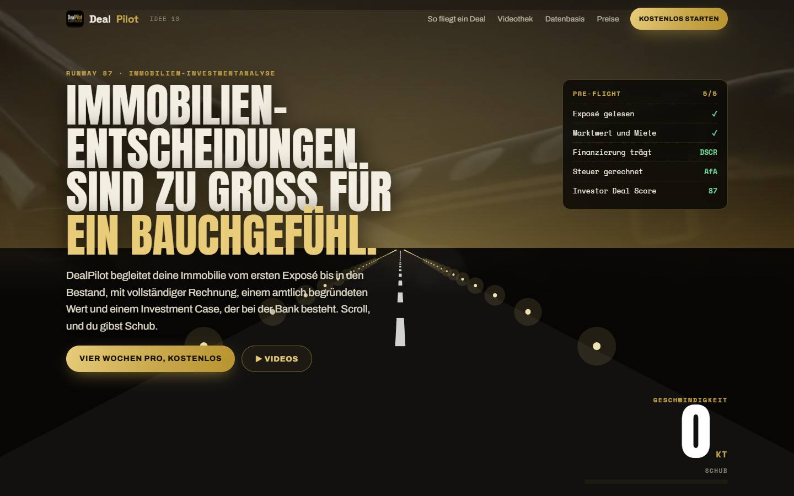

Ideen 01 bis 05

01 Flug durch die SchriftDas Hero-Video läuft in der Wortmarke DealPilot, beim Scrollen fliegt die Kamera durch den Strich des l, bis das Video den ganzen Schirm füllt. Im Score-Teil läuft das Cockpit-Video in einem Ring, der sich synchron zur Karte auf 87 füllt, die Videothek zieht als Filmstreifen vorbei. Die Etappen-Ziffern füllen sich mit Gold, daneben wischt die App-Ansicht kreisförmig auf.Ansehen →
02 Über den WolkenVier Wolkenebenen ziehen beim Scrollen verschieden schnell vorbei, das Hero-Video sitzt in einem Flugzeugfenster, dessen Rollo hochfährt und das aufzieht, bis du hindurchfliegst. Die Videothek ist eine Fensterreihe am Rumpf, beim Darüberfahren läuft der Film im Fenster an. Der Score bricht durch die Wolkendecke, zwei Instrumente schwingen auf 81 und 96, die Etappen sind eine Flugroute, die sich beim Scrollen zeichnet.Ansehen →
03 HangarDer Hero ist eine schräg im Raum liegende Wand aus echten App-Ansichten, die beim Scrollen flach auf dich zukippt, davor ein Monitor mit dem Runway-Video. Die Videothek ist ein Coverflow mit Spiegelung, Wischen und Pfeiltasten. Die Score-Karte liegt als Explosionszeichnung im Raum und setzt sich beim Scrollen Bauteil für Bauteil zusammen, die neun Etappen klappen als Kartenstapel nach oben weg.Ansehen →
04 DatenstromTausende Goldpunkte rasen als Startbahn auf dich zu, sammeln sich zu Score-Ring und 87 und werden in diesem Moment zur echten Karte. Die Formel 81 mal 59 Prozent plus 96 mal 41 Prozent rattert wie eine Anzeigetafel, ein Regler zeigt, was mit dem Deal Score passiert, wenn die Finanzierung nicht trägt. Die Videothek ist eine Abflugtafel, die Etappen fahren quer über eine Startbahn.Ansehen → 05 Bauchgefühl gegen FlugdatenEin Wischregler teilt den Hero: links das Bauchgefühl verschwommen und schwankend mit flatternden Zetteln, rechts dieselbe Szene scharf mit Flugdaten. Im Score-Teil teilt sich die 87 wie eine Zelle in 81 und 96, daneben zittert eine nervöse Gefühlsnadel neben der ruhigen Karte. Der Spot läuft im Kinosaal mit neun anspringbaren Kapiteln, die Etappen werden beim Scrollen aufgewischt.Ansehen →Ideen 06 bis 10

06 AbflugtafelDie Startseite als Abflugtafel. Werte, Etappen und Status klappen als Split-Flap-Anzeige um, der Investor Deal Score steht als Flugstatus mit Segmentbalken. Beim Scrollen boardet jede Etappe auf der Tafel, die vorigen wechseln auf abgeflogen, daneben die passende Ansicht aus DealPilot. Die Videothek läuft auf Gate-Monitoren, der große Monitor spielt den Spot stumm, sobald er im Bild ist.Ansehen →
07 Cockpit-HUDVollbild-Video mit Head-up-Display. Horizont, Kursband und die Bänder für Score und amtliche Werte folgen der Maus. Der Score ist ein künstlicher Horizont mit Kreiselanlauf, darunter fünf Triebwerksanzeigen, deren Nadeln auf die Werte schwingen. Die Etappen fliegt ein Flugzeug auf dem Navigationsdisplay ab, die Videothek ist ein Multifunktionsdisplay mit Softkeys.Ansehen →
08 Magnetische KachelnEin Bento-Raster, dessen Kacheln beim Laden einfliegen, mit Cursor-Licht, leichter Neigung und magnetischen Knöpfen. Die Score-Kachel teilt sich beim Überfahren in Investment-Score und Finanzierungs-Score. Einer reicht nicht. Etappen und Videos sind Kacheln, die sich öffnen, nach vorn springen und stumm anlaufen.Ansehen →
09 Exposé zerfällt in DatenEin Exposé liegt auf dem Tisch und zerfällt beim Scrollen in über tausend Datenpunkte. Die 24 Kennzahlen fliegen als Etiketten in ihre fünf Bereiche, die Teilchen formen den Ring bis 87, am Ende stehen die zwei Scores. Danach Kapitel im Magazin-Stil, deren Bilder sich aufziehen, und Videos als Heft-Ausgaben, die sich aufschlagen.Ansehen →
10 StartlaufScrollen ist Schub. Die Startbahn rast im Canvas auf dich zu, die Geschwindigkeit steigt, bei V1 und Rotate hebt die Seite ab. Der Score ist ein Triebwerksinstrument mit zwei Triebwerken für Investment und Finanzierung, denn mit einem startet kein Flugzeug. Die Etappen liegen auf einer Startbahn, deren Befeuerung mit dem Scrollen angeht. Am Ende Countdown und Abheben.Ansehen →